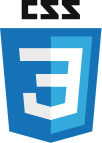

Ferramentas
- 
Habilidades Pessoais
- Facilidade de Aprendizado
- Liderança
- Trabalho em Equipe
- Organização
- Boa comunicação
- Compromisso
- Flexibilidade
Especialista em Segurança Corporativa / Developer Junior
São Paulo - BR
Consultoria e Auditoria dos sites, referente as questões sobre Segurança Patrimonial e Corporativa. Atualização e acompanhamento de processos, normas e políticas de Segurança em nível nacional. Formulação e apresentação de treinamentos periódicos e workshops anuais para equipes de facilities (Portaria e Recepção).
Coleta e análise de imagens de eventos para tratativa de incidentes, investigações diversas ou que tenham sido solicitadas por órgãos públicos para averiguação. Representação da empresa junto aos órgãos públicos e Conselhos de Segurança da região em que estão localizados os sites.
Acompanhamento de auditoria de clientes, fornecendo evidencias solicitadas para verificação de conformidades contratuais. Consultoria para implantação de novas tecnologias de segurança, realizando levantamento das inovações na área, reunião com os fornecedores, implantação e acompanhamento de POC's (Prova de Conceito).
Atuando desde a pré-venda fazendo a vistoria com relatório de levantamento de riscos (Mosler e T-Fine) e equipamentos sugeridos para apresentação de proposta orçamentária para implantação de portaria digital, automatização do condomínio através de equipamentos que permitam a abertura de portões a distância e presencialmente por biometria, chaveiro magnético (TAG) ou senha numérica, controle de garagem (Módulo Linear) e CFTV para monitoramento.
Após fechamento de contrato, acompanhamento de obras de instalação de equipamentos com suporte ao cliente sobre o andamento da obra e cumprimento de prazos, cadastro de moradores e prestadores no banco de dados para uso do software de atendimento a distância através de coleta biométrica. Integração dos softwares de monitoramento do cliente aos da empresa (D-Guard), coleta e análise de imagens de eventos para formulação de relatórios referentes a sinistros, eventos diversos ou que tenham sido solicitados para averiguação.
Formulação de manuais de atendimento individuais para cada cliente, treinamento para operadores (atendimento e monitoramento) referente à portaria e segurança, com foco em agilidade de atendimento e principais zonas de monitoramento.Gestão da equipe operacional (atendimento, portaria e monitoramento) através de treinamentos,feedbacks, controle de faltas, folgas, escalas, férias, horas extras e banco de horas. Relatórios gerenciais sobre andamento das implantações, recursos humanos, entre outros.
Representação da empresa em reuniões de condomínio referentes à portaria e segurança, e junto aos órgãos públicos quando necessário. Suporte ao cliente para melhorias futuras nos sistemas de segurança e atendimento, através de apresentação de novas tecnologias e equipamentos.
Inspeção interna em metalúrgica com equipe de 36 colaboradores, divididos em vigilantes, recepcionistas e porteiros, fazendo a gestão da equipe através de feedbacks, controle de escalas de folga, falta, férias, horas extras. Verificação de materiais carga, acompanhamento de normas e procedimentos, visando melhorias tanto em segurança como em agilidade de atendimento.
Gerente de segurança em Centro Empresarial de grande porte com equipe de 20 colaboradores, divididos em operadores de monitoramento, porteiros, recepcionistas, vigilantes e bombeiros civis. Acompanhamento de normas e procedimentos, de acordo com os padrões estabelecidos pelo cliente. Treinamentos mensais sobre segurança, comportamento e atendimento. Atendimento de VIP's para pousos e decolagens em heliponto diariamente. Relatórios mensais ao cliente contendo os dados de acesso ao condomínio, quantidade de pousos, atendimentos médicos, ocorrências/sinistros, treinamentos efetuados e melhorias sugeridas.
Controle de acesso de funcionários e visitantes, acompanhamento de prestadores de serviço pelas dependências da empresa, monitoramento de CFTV, prevenção de roubos e furtos em geral, formulação de planilhas, entre outros serviços competentes a área.